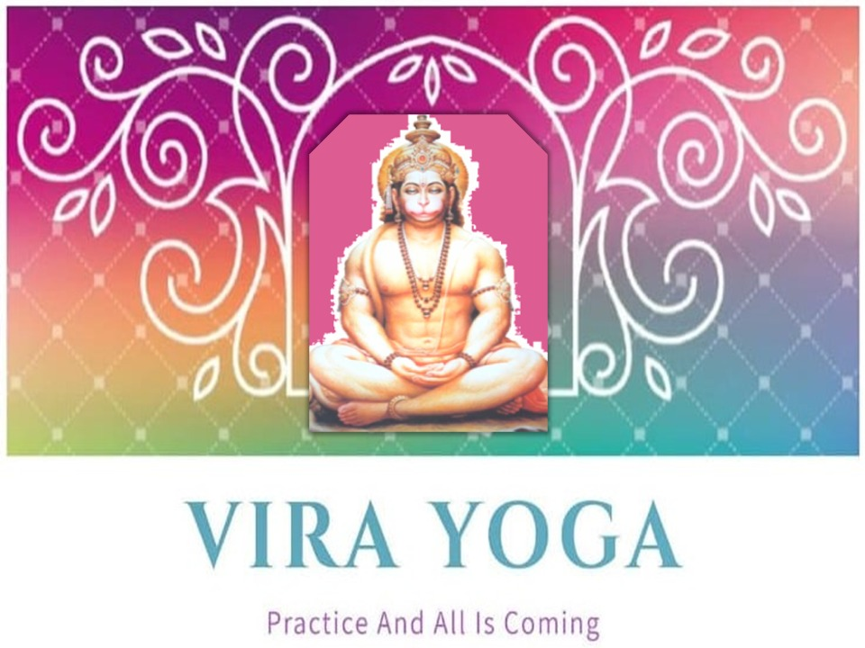

VIRA YOGA
Hatha yoga
Hatha yoga
is one of the most traditional and foundational forms of yoga, emphasizing the physical postures (asanas) and breath control (pranayama). Here are some key points to note about Hatha yoga which we offer:
Physical Postures (Asanas):
Hatha yoga places a significant emphasis on physical postures, and the practice involves a variety of poses that stretch, strengthen, and balance the body. These poses are designed to enhance flexibility, improve posture, and promote physical well-being.
Breath Control (Pranayama):
Pranayama is the practice of breath control, and it plays a crucial role in Hatha yoga. Proper breathing techniques are used to enhance energy flow, relaxation, and mental clarity. Breathing exercises can be integrated into the practice to promote a balanced mind and body.
Balancing Opposites:
The term "Hatha" itself is a combination of two Sanskrit words: "ha" (sun) and "tha" (moon). Hatha yoga aims to balance these opposing forces or energies within the body. It seeks equilibrium between strength and flexibility, effort and relaxation, and various other dualities.
Gentle and Slow:
Hatha yoga classes are typically slower-paced and gentler compared to more vigorous styles like Vinyasa or Power yoga. This makes it accessible to individuals of different fitness levels and ages.
Mind-Body Connection:
Hatha yoga promotes the connection between the mind and body. Practitioners are encouraged to be present in each pose, focusing on the sensations, breath, and alignment. This mindfulness aspect can help reduce stress and improve mental well-being.
Alignment and Safety:
Proper alignment is a key aspect of Hatha yoga to ensure that the poses are performed safely and effectively. This focus on alignment helps prevent injuries and promotes physical awareness.
Traditional Philosophy:
While Hatha yoga is primarily physical, it is grounded in traditional yogic philosophy. It recognizes the importance of the Yamas and Niyamas (ethical guidelines), concentration, meditation, and the pursuit of self-realization.
Variety of Poses:
Hatha yoga includes a wide range of poses, including standing, seated, supine, and inverted poses. The variety of poses helps to work on different areas of the body and maintain overall balance.
Stress Reduction:
The practice of Hatha yoga can lead to stress reduction, relaxation, and mental clarity. It is often used as a therapeutic tool for managing stress and anxiety. Hatha yoga is an excellent starting point for those new to yoga or for anyone looking to cultivate a well-rounded and balanced physical and mental practice. It can be adapted to suit individual needs and goals, making it a versatile form of yoga that can benefit people of all fitness levels and ages.
